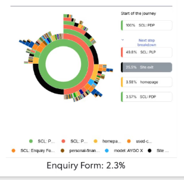

Toyota
Optimisation.
Toyota is one of the world’s largest automotive brands, with a high-traffic digital platform supporting customers across research, configuration, and purchase journeys.
As a Senior Product Designer within a cross-functional growth team, I defined and delivered A/B experiments across Toyota’s web and mobile experiences to improve conversion, leaning on behavioural data to spot opportunities and prove impact.

Measured uplift along the journey.
Goal
I was brought into the team to identify opportunities to improve conversion across Toyota’s digital journeys, from initial exploration through to enquiry and purchase.
Working across the full lifecycle, I focused on uncovering high-impact opportunities using behavioural data and translated them into design-led experiments on live journeys.
Approach
I ran controlled A/B tests on live product journeys, comparing existing designs (control) against new variants to measure impact.
With a Senior Optimisation Consultant, Lead Engineer, and QA Tester, I shaped hypotheses and success metrics using behavioural data from Adobe Analytics and ContentSquare, prioritised high-impact tests, and iterated safely on production.
Improving navigation between product pages and listings
Behavioural data showed users were actively exploring vehicles, but the journey between listings (PLP) and product pages (PDP) wasn’t supporting this well.
Around 50% of users attempted to return to listings, yet navigation was unclear and underperforming, limiting exploration and progression toward enquiry.

Journey analysis - users frequently attempted to return to listings
Improving visibility and clarity of returning to listings would increase exploration and progression toward enquiry.
Exploring different navigation patterns
The opportunity wasn’t to introduce new behaviour, but to better support what users were already trying to do: returning to listings.
I explored multiple navigation patterns, including breadcrumb variations (“Back to inventory”, “Return to stock list”) and CTA-based solutions, to understand how best to reduce friction and improve flow.
Behavioural patterns showed users were already relying on familiar navigation cues. Rather than introducing something new, we focused on making this interaction clearer and more visible.

Breadcrumb navigation

Back link navigation
Click-through on the way back to the listing
ContentSquare click data on AB-115 (stock car return to PLP) showed the gain in listing views lining up with the new return CTAs, not random noise elsewhere on the page.
Mobile: Control taps on the breadcrumb trail that sent people back to stock were about 1–1.5% CTR; the variant landed around 5.5–7.2%. On mobile, people skewed toward the back arrow over the “Back to results” copy.
Desktop: Control was roughly 0.75–1.9%; the variant reached about 1.8–8.2%. On desktop, “Back to results” drew more clicks than the arrow.

AB-115 · Stock car return to PLP
Clear uplift from experimentation.
- +31% increase in PLP page views
- +20% increase in enquiry progression (low sample, directional)
- Increased engagement with navigation across devices
Clarity beats complexity
Clarity in familiar patterns can outperform introducing something new. Improving familiar interactions can have a significant impact on user flow, particularly in high-intent journeys where users are trying to move quickly.
Lightweight personalisation for business buyers
The configuration journey leaned personal; business users had thin context on incl./excl. VAT and what pricing meant for them.
Rather than a full redesign, I looked for simple ways to add a personal vs business switch, using competitors and a bit of internal critique before we tested anything live.
Making business pricing and context more visible would increase engagement and relevance for business users.
Make personalisation visible and reusable
I explored four desktop placements for the personal vs business toggle, not as a formal study, just to see what felt right. Scroll across: the sales-grid version was easy to miss, and sitting it on the hero felt noisy. I preferred the question banner under the hero, with a separate band on mobile so it was easy to see and tap.
Swipe or scroll · one placement at a time

In hero
Toggle alongside the model name and price, embedded in the hero treatment.

Sales banner
Contextual to offers and pricing blocks lower on the page.

Top banner
Dedicated strip under the main nav, above the hero.

Question banner
Prompt-led band below the hero: clear question, supporting line on VAT, then Personal / Business controls.
New value-led messaging block
Replacing consumer-led copy with business-relevant messaging when users choose a fleet context.


Links and tiles tailored to business journeys
The sales grid swapped personal CTAs for business contract hire, calculators, and fleet-oriented promos once people moved into the business context.


Interaction and content changes across personalisation.
Strong early engagement signals
Initial testing showed strong interaction with the toggle, validating user interest in switching between personal and business contexts.
The experiment finished after I left the project, but early signals supported further investment in personalisation.
Make personalisation obvious and user-controlled
Even lightweight personalisation can be effective when it’s visible, easy to use, and clearly improves relevance, without requiring complex system changes.